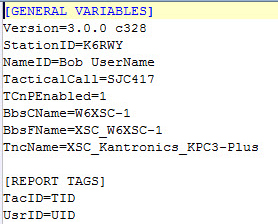

What is a Profile?
A profile is a set of parameters. The parameters are represented as ASCII text in a file. A profile file has an extension of “.profile” and is stored in a specific directory. At the moment that directory is in Windows Users AppData Roaming directory. In the recent version it was suggested to move the data directory to a "central" location such as "C:\SCCo Packet".
|  |
| Fig. 1 -- Example Profile File |
The INI format is used in the profile files. The INI format was used in windows operating systems in the 80s and replaced by the System Registry in WinNT. A similar format is present in Unix and other operating systems. More information about the INI format may be found in Wikipedia: en.wikipedia.org/wiki/INI_file .
An INI file is composed of text lines (see Figure 1) so it may be easily read by humans and easily parsed by software. There are three interesting entities in an INI file: sections, property names and values. There may also be blank lines and comments.
More importantly, an INI file is managed by functions in the programming language’s library (or in the operating system itself which for our purposes is unimportant). A program may read a value given a section and property name or it may write a value to a section and property name.
One final point about INI files. The extension (that part of the file name after the period) need not be "ini". In fact the INI files used for profiles have the extension ".profile" and for operator ID files the extension is either ".usr" or ".tac".
Relationship Between Profiles and usr/tac Files
The tactical identity is now housed in part (or completely) in a ".tac" file. The FCC identity information is now housed in part (or completely) in a ".usr" file. The Tactical ID is used to find the correct ".tac" file. Likewise the FCC ID is used to find the correct ".usr" file. Each file contains the following fields:
- Call Sign
- Name
- Numbering Prefix
- Signature used in plain text messages